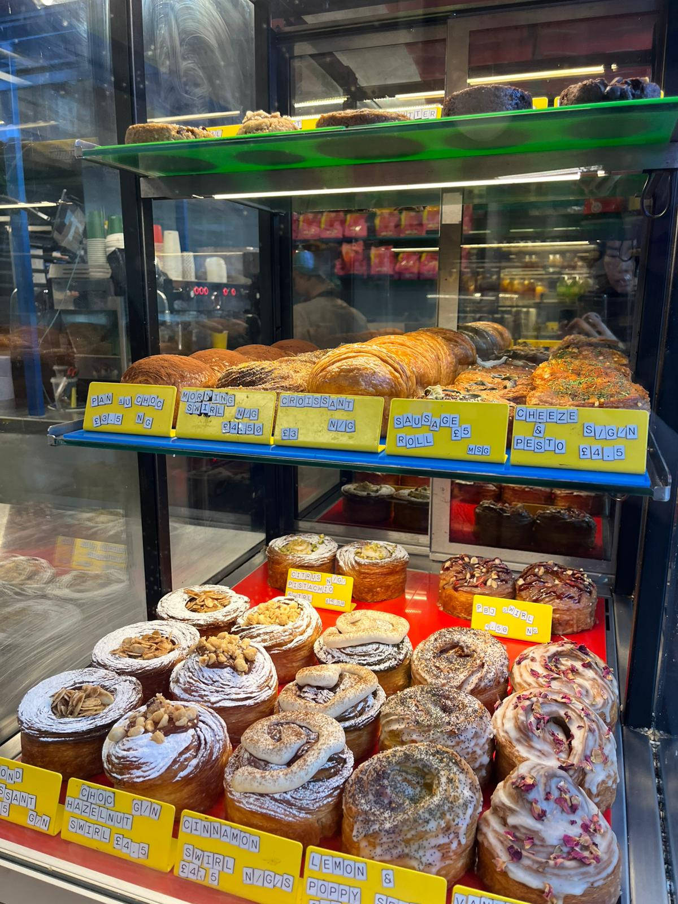
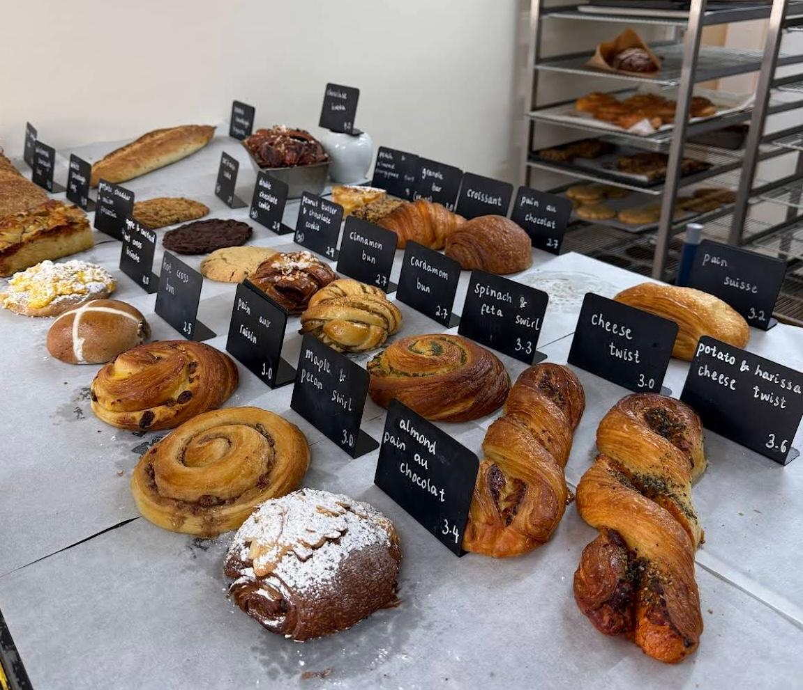
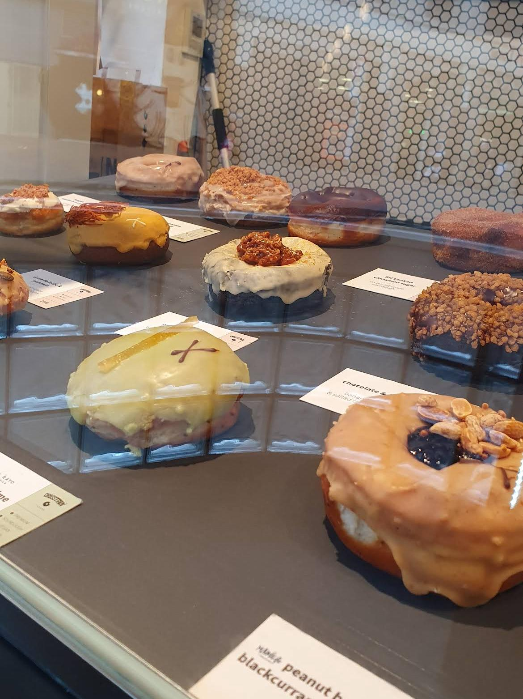

Explore
Bakery Map in London
Good pastries stimulate good discussions. Below are some of our favourites for reading groups:

My favourite plant-based bakery in London.
A great variety of options from pistachio swirls to sausage rolls, with no added vegan tax!

Their potato, harissa and cheese twist is great. Everything is made fresh on-site too.

All vegan. Everything is good.